FoodLuck MEO 操作説明書 05
写真管理
料理・外観・店内・ロゴ・カバー写真を整え、Google上の来店前印象を良くするための現場運用マニュアル
| この資料の目的 飲食店では、写真は来店前のお客様が雰囲気や料理を判断する大きな材料です。FoodLuck MEOの写真管理では、GoogleビジネスプロフィールやYahoo!プレイスなどへ掲載する写真・動画を追加、予約、確認、削除できます。削除や登録は外部表示に関わるため、対象店舗と対象媒体を確認してから操作します。 |
|---|
1. 写真管理でできること
写真管理では、店舗に関係する画像や動画を媒体別、カテゴリー別に確認します。お客様が検索した時に見える写真を整える画面なので、料理写真だけでなく、外観、店内、メニュー、ロゴ、カバーも確認します。
| 機能 | 主な用途 | 店舗側で見ること | 注意点 |
|---|---|---|---|
| 写真一覧 | 登録済み写真を確認する | 古い写真、季節違い、見栄えの悪い写真がないか | オーナー提供とユーザー提供で扱いが違う |
| 新規登録 | 写真や動画を追加する | 媒体、カテゴリー、画像ファイルを確認する | 保存後は外部に表示される可能性がある |
| 写真予約 | 指定日時に写真を登録する | キャンペーンや季節メニューの開始日に合わせる | 予約内容は一覧で確認する |
| 削除 | 不要なオーナー提供写真を消す | 対象写真が本当に不要か確認する | ユーザー投稿写真はDashboardから削除できない |
| ロゴ・カバー | 店舗アイコンや上部表示写真を整える | ロゴ、外観、雰囲気が伝わる写真を選ぶ | 設定しても必ずその写真が表示されるとは限らない |
管理画面: 写真管理の全体像
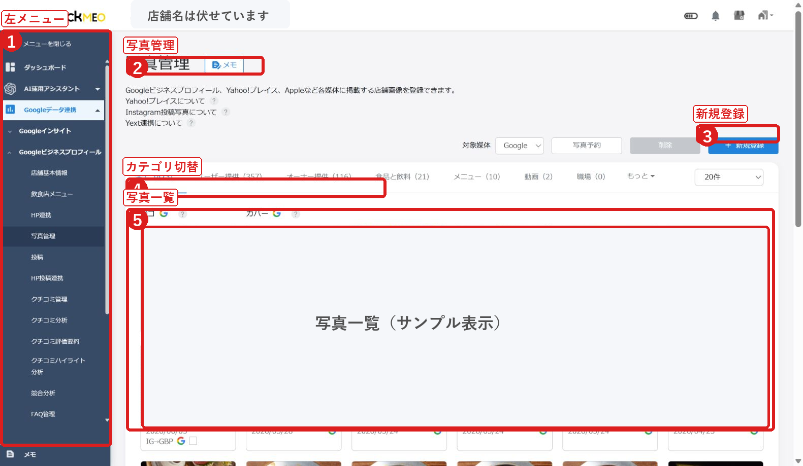
- 左メニューからGoogleデータ連携、Googleビジネスプロフィール、写真管理へ進みます。
- 対象媒体、写真予約、新規登録、カテゴリー切替、写真一覧を確認します。
- 配布用資料のため、店舗名と写真一覧は伏せています。
2. 写真を登録する前に準備すること
写真は、ただ枚数を増やすよりも、お客様が来店後を想像しやすい内容を選ぶことが大切です。飲食店では、料理の寄り写真、店内の雰囲気、入口の外観、メニュー表、スタッフの接客感が伝わる写真をバランスよく用意します。
| 種類 | おすすめの内容 | 避けたい写真 |
|---|---|---|
| 料理・飲み物 | 看板商品、人気メニュー、季節メニュー、ドリンク | 暗い、ピントが甘い、量や色が実物と違う |
| 外観 | 初めてのお客様が入口を見つけやすい写真 | 看板が見切れている、夜営業なのに昼だけの写真 |
| 店内 | 席の雰囲気、個室、カウンター、清潔感 | 散らかり、人物の写り込み、暗すぎる写真 |
| メニュー | 価格や内容が読めるメニュー写真 | 古い価格、終了済みメニュー |
| ロゴ・カバー | ロゴ、看板、店の特徴が伝わる写真 | 文字が小さすぎる、余白が足りない |
| FAQにある推奨サイズ 静止画はJPGまたはPNG、10KBから5MB、推奨解像度は720px x 720pxです。最小は250px x 250px、最大は10,000px x 10,000pxです。動画は最大30秒、最大25MB、720p以上が目安です。ロゴ写真、カバー写真は別のサイズ条件があるため、登録時にエラーが出た場合はサイズと形式を見直します。 |
|---|
3. 写真を新規登録する
写真追加は、写真管理画面の「+新規登録」から行います。Googleビジネスプロフィールのみ連携している場合と、Yahoo!プレイスも連携している場合で、媒体選択の有無が変わります。
FAQ画像: 写真管理から新規登録を開く
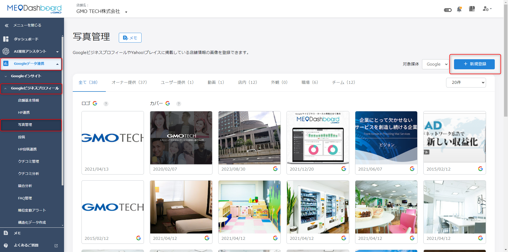
- 写真管理画面右上の+新規登録をクリックします。
- 登録前に、対象店舗と対象媒体が正しいか確認します。
FAQ画像: 写真ファイルを選択またはドラッグする
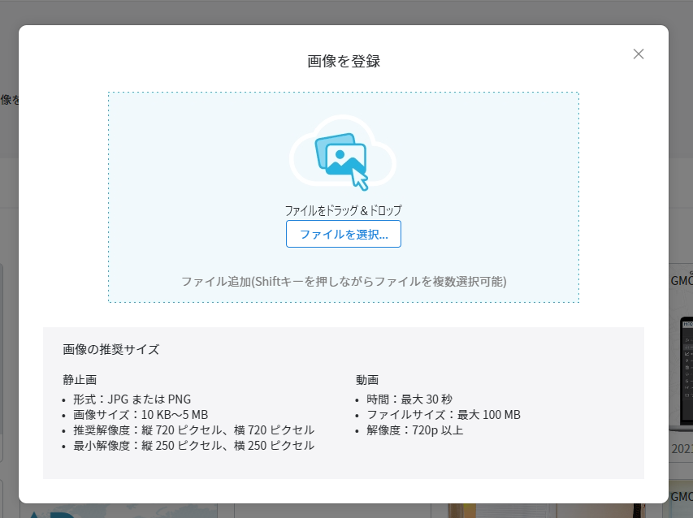
- ファイルを選択、またはドラッグ&ドロップで写真を入れます。
- 複数枚まとめて登録できます。アップロードできない場合は、画像サイズ、形式、容量を確認します。
- 左メニューからGoogleデータ連携、Googleビジネスプロフィール、写真管理を開きます。
- +新規登録をクリックします。
- Yahoo!プレイス連携後は、登録したい媒体にチェックを入れます。
- カテゴリー選択から該当カテゴリーを選びます。該当がない場合は選択せずに進みます。
- 写真または動画ファイルを選択します。
- 読み込みが完了したことを確認します。
- 保存、登録完了後、右上の通知や写真一覧で結果を確認します。
FAQ画像: Yahoo!連携後は媒体を選択する
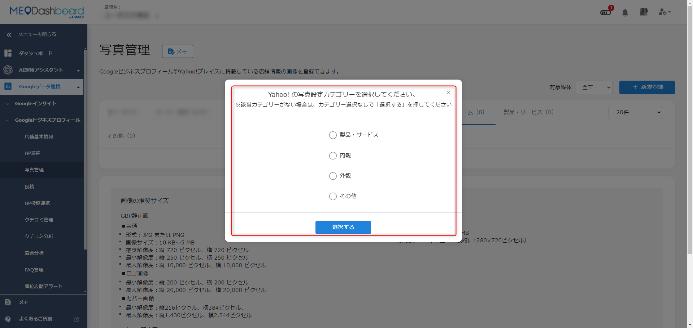
- GoogleとYahoo!へまとめて登録する場合は、両方のチェックを確認します。
- 媒体によって登録できるカテゴリーや表示条件が異なる場合があります。
4. カテゴリーを選んで写真を登録する
FoodLuck MEOでは、写真をカテゴリーごとに分けて掲載することが推奨されています。これは、Googleの画像解析に店舗情報を正しく認識してもらいやすくするためです。
FAQ画像: 写真カテゴリーを選択する
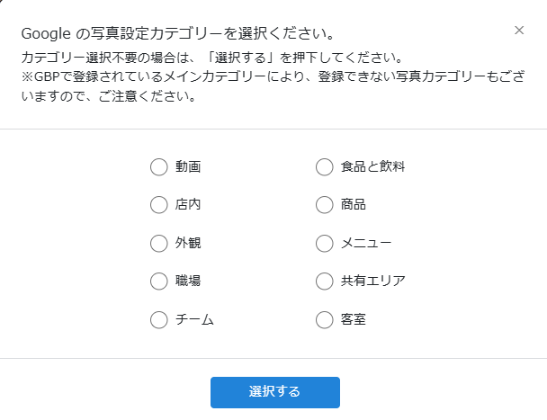
- 外観、内観、商品、食品と飲料、メニューなど、写真の内容に合うカテゴリーを選びます。
- メインカテゴリーによって追加できないカテゴリーがあります。エラーが出た場合は別カテゴリーを選びます。
- 料理写真は、食品と飲料や商品など、内容に合うカテゴリーを選びます。
- 店内写真は、席の雰囲気や利用シーンが伝わる写真を選びます。
- 外観写真は、入口、看板、駐車場の位置が分かるものを選ぶと初回来店に役立ちます。
- メニュー写真は、価格変更や提供終了があった時に古い画像が残らないよう確認します。
5. ロゴ写真・カバー写真を設定する
ロゴ写真は、投稿やクチコミ返信のアイコンとして見えることがあります。カバー写真は、ビジネスプロフィール上部に表示されやすい写真です。飲食店では、ロゴ、看板、外観、雰囲気が伝わる写真を整えると、初めてのお客様にも印象が伝わりやすくなります。
FAQ画像: ロゴ写真とカバー写真の表示イメージ
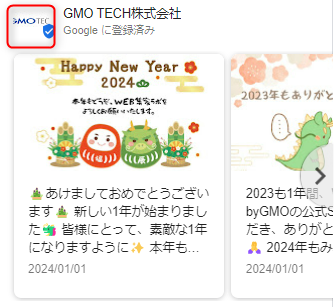
- ロゴ写真は店舗アイコンのように表示されることがあります。
- カバー写真は目立つ場所に出やすいため、外観や店舗の特徴が伝わる写真を選びます。
FAQ画像: ロゴ・カバー写真の設定欄
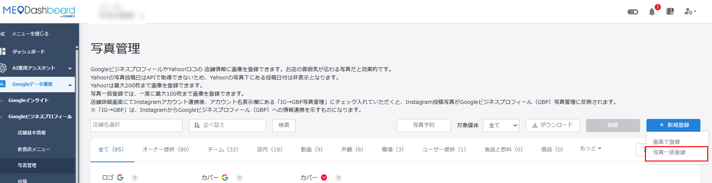
- 未設定の場合は枠内をクリックして画像を登録します。
- 設定済みの場合は、枠にカーソルを合わせて表示されるメニューから編集します。
| カバー写真の注意 カバー写真として登録しても、実際にGoogle上で必ずその写真が表示されるとは限りません。カバー写真の目安は横384px x 縦216px以上、横2,544px x 縦1,430px以下、形式はpngまたはjpeg、容量は10KBから5MBです。 |
|---|
6. 写真予約を使う
写真予約は、指定した日時に写真や動画の登録を予約できる機能です。季節メニュー、キャンペーン、リニューアル、年末年始など、見せたいタイミングが決まっている写真に向いています。
FAQ画像: 写真予約の入口
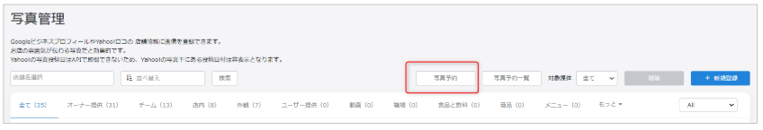
- 写真管理画面から写真予約を開きます。
- 登録媒体、カテゴリー、ファイル、対象店舗、予約日時を確認します。
FAQ画像: 写真予約の登録内容
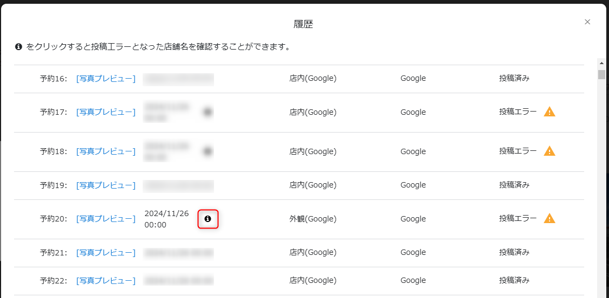
- 写真を選択すると予約写真一覧に表示されます。
- 予約日時を設定し、登録ボタンで予約します。
FAQ画像: 写真予約一覧と履歴
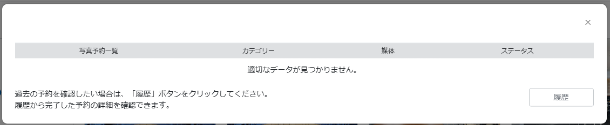
- 予約中の内容は写真予約一覧で確認します。
- 履歴タブでは過去の予約結果を確認できます。投稿エラー時は情報アイコンから対象店舗を確認します。
| 写真予約の注意 FAQでは、予約内容は翌日以降に反映される案内があります。急ぎの差し替えや当日の告知写真は、予約ではなく通常登録やSNS投稿との併用を検討します。 |
|---|
7. 写真を削除する・ユーザー投稿写真を報告する
削除できるのは、原則として店舗側が登録したオーナー提供写真です。ユーザーが投稿した写真は、FoodLuck MEOの画面から直接削除できません。Googleのポリシーに違反している場合のみ、Googleへ問題報告や削除申請を行います。
FAQ画像: オーナー提供写真を選ぶ
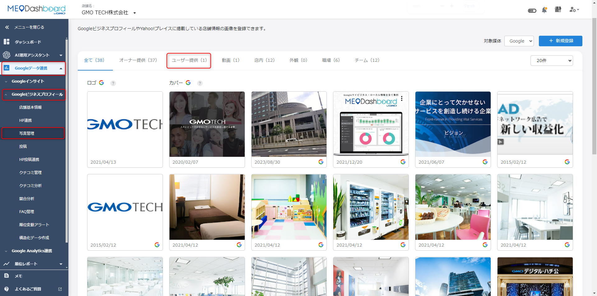
- 写真管理でオーナー提供を選び、対象写真のメニューから削除を選びます。
- 複数削除できる場合も、対象写真を間違えないよう確認します。
FAQ画像: 削除確認画面
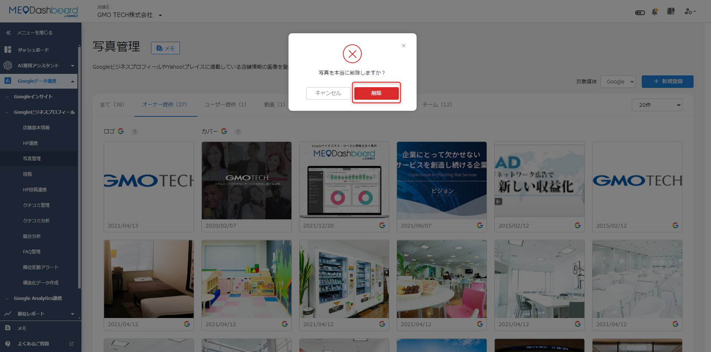
- 削除確認が表示されたら、対象写真が正しいか最後に確認します。
- 削除は外部表示に関わる操作です。迷う場合はFoodLuck側へ相談します。
FAQ画像: ユーザー投稿写真の問題報告
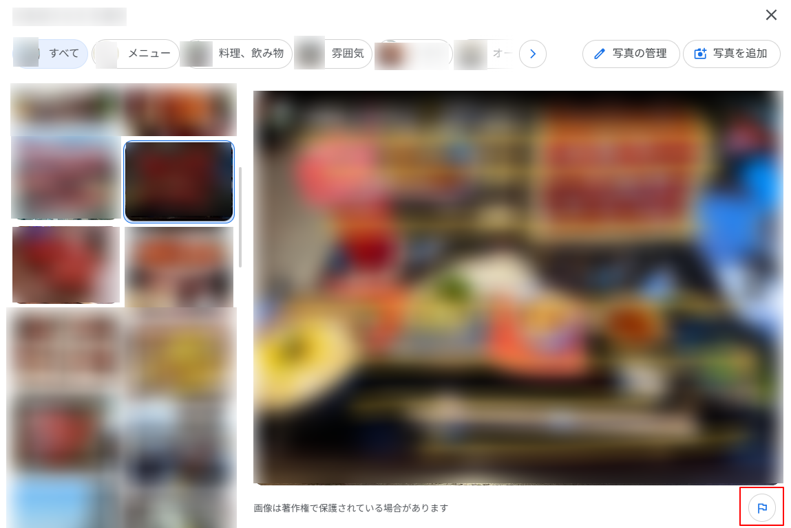
- ユーザー投稿写真は、GoogleマップやGoogleビジネスプロフィール側から問題を報告します。
- 報告しても必ず削除されるわけではありません。Googleがポリシー違反と判断した場合のみ削除されます。
- 削除対象になりやすい例は、店舗と関係ない写真、不適切な内容、プライバシーを侵害する写真、著しく品質が低い写真です。
- ユーザー投稿写真は、投稿したユーザーとGoogleが管理するため、店舗側で強制削除はできません。
- 削除申請の効果を高めるため、複数人で正しく報告する方法が案内されています。
8. グループで写真・動画を追加する
複数店舗を管理している場合、同じ写真を全店舗へ登録する方法と、店舗ごとに違う写真を一括登録する方法があります。一括操作は対象店舗を間違えると複数店舗へ影響するため、店舗側だけで進めずFoodLuck側で確認してから行います。
FAQ画像: グループ画面の写真新規登録
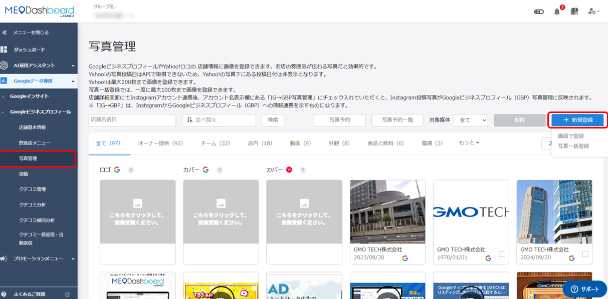
- グループ画面でも写真管理から+新規登録を開きます。
- 全店舗同じ写真を登録する場合は、対象店舗をまとめて選択できます。
FAQ画像: 対象店舗を選択する
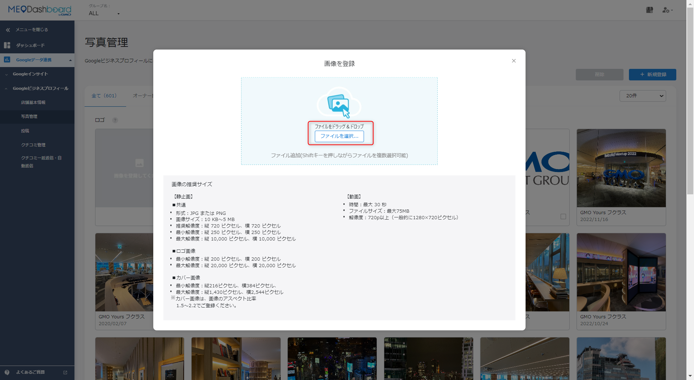
- 対象店舗すべてにチェックを入れると、複数店舗へ同じ写真を登録できます。
- 店舗ごとに写真が違う場合は、一括登録用の運用を使います。
FAQ画像: 複数写真・動画を選択する
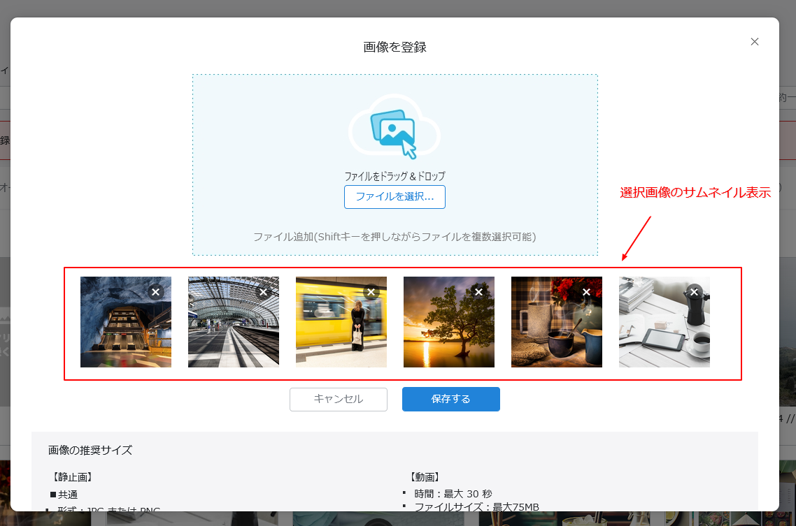
- 複数枚選択して登録できます。
- 写真と動画では条件が違うため、アップロード前に形式と容量を確認します。
| 一括登録の注意 店舗ごとに異なる写真を一括登録する場合、FAQではファイル名のルールや店舗IDを使う方法が案内されています。ファイル名や店舗IDを間違えると、別店舗へ写真が入る可能性があるため、FoodLuck側で確認してから進めます。 |
|---|
9. 写真管理の現場チェックリスト
□ 写真を追加する前に、開いている店舗と対象媒体を確認した
□ 料理、外観、店内、メニュー、ロゴ、カバーの写真が古くなっていない
□ 画像形式、容量、解像度がFAQの推奨条件に合っている
□ 登録カテゴリーが写真内容と合っている
□ Yahoo!プレイス連携後は、登録したい媒体にチェックが入っている
□ 写真予約は、予約日時と対象店舗を登録前に確認した
□ 削除する写真がオーナー提供写真であることを確認した
□ ユーザー投稿写真は、Dashboardから削除できないことを理解した
□ グループ一括登録は、FoodLuck側と確認してから進める
10. この資料に反映したFAQ記事
このカテゴリの下層FAQ記事14件を確認し、写真管理の操作方法として本文へ反映しています。店舗側の日常操作と、FoodLuck側で確認して進める一括操作を分けています。
| FAQ記事 | 反映した章 | 店舗向けの扱い |
|---|---|---|
| Googleビジネスプロフィールに表示する画像・動画の推奨サイズ | 写真準備・カテゴリー | 店舗側が日常的に確認・利用する項目 |
| おすすめの投稿写真について | 写真準備・カテゴリー | 店舗側が日常的に確認・利用する項目 |
| カバー写真のサイズについて | ロゴ・カバー設定 | 店舗側が日常的に確認・利用する項目 |
| グループでの写真の削除方法 | 削除・問題報告 | FoodLuck側と確認して進める項目 |
| グループでの写真・動画の追加方法 | 写真・動画の追加 | FoodLuck側と確認して進める項目 |
| ユーザーが投稿した画像の削除方法 | 削除・問題報告 | 店舗側で確認し、削除や申請は慎重に対応 |
| ユーザー投稿写真の問題を報告（削除申請）する | 削除・問題報告 | 店舗側で確認し、削除や申請は慎重に対応 |
| ロゴ写真とカバー写真の概要と表示イメージ | ロゴ・カバー設定 | 店舗側が日常的に確認・利用する項目 |
| ロゴ写真・カバー写真の設定方法 | ロゴ・カバー設定 | 店舗側が日常的に確認・利用する項目 |
| 写真のカテゴリー投稿について | 写真準備・カテゴリー | 店舗側が日常的に確認・利用する項目 |
| 写真の削除方法 | 削除・問題報告 | 店舗側で確認し、削除や申請は慎重に対応 |
| 写真の追加方法（Googleビジネスプロフィールのみ連携中） | 写真・動画の追加 | 店舗側が日常的に確認・利用する項目 |
| 写真の追加方法（Yahoo!プレイス連携後） | 写真・動画の追加 | 店舗側が日常的に確認・利用する項目 |
| 写真予約の方法 | 写真予約 | 店舗側が日常的に確認・利用する項目 |